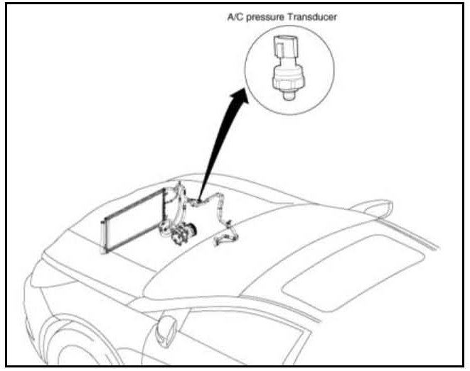
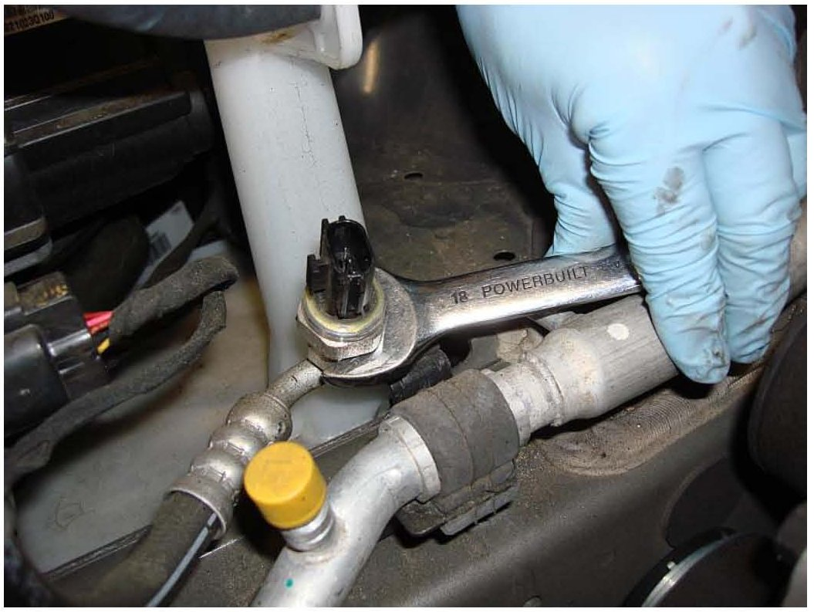
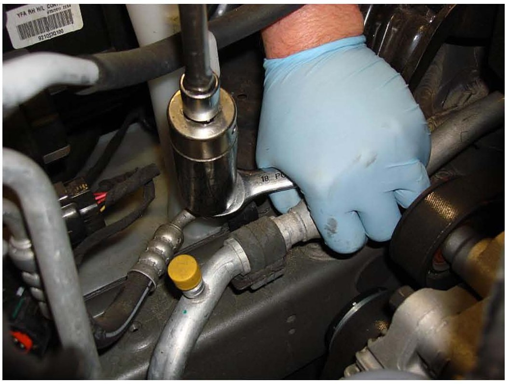

A/C - Pressure Transducer Service Precautions
GROUPHVAC
DATE
FEBRUARY 2013
NUMBER
13-HA-001
MODEL
ALL MODELS
SUBJECT:
A/C PRESSURE TRANSDUCER SERVICE PROCEDURE
Description:

This bulletin provides important service information to properly remove and install the A/C pressure transducer during A/C system repair.
Applicable Vehicles:
^ All models equipped with an air conditioning system
Service Information:
1. Refer to applicable Shop Manual to perform the required service work.

2. When removing or installing the A/C pressure transducer, ALWAYS support the hex portion of the sensor port with an open ended wrench.
^ This prevents any damage to the A/C pipe due to twisting force of the wrench.
NOTICE
Failure to do so may cause damage to the A/C pipe, resulting in leakage of refrigerant.

3. While the sensor port is supported with the open-ended wrench, the NC pressure transducer can now be safely removed or installed by using a deep socket wrench.
^ Refer to applicable Shop Manual for tightening torque specification.